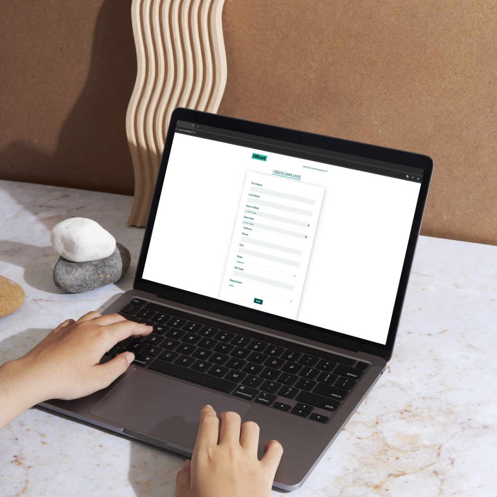
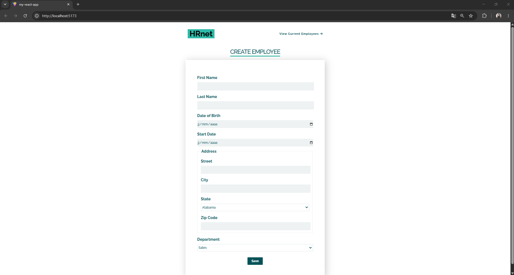
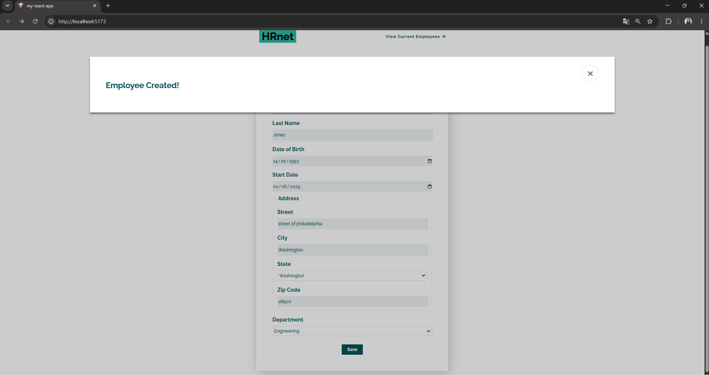
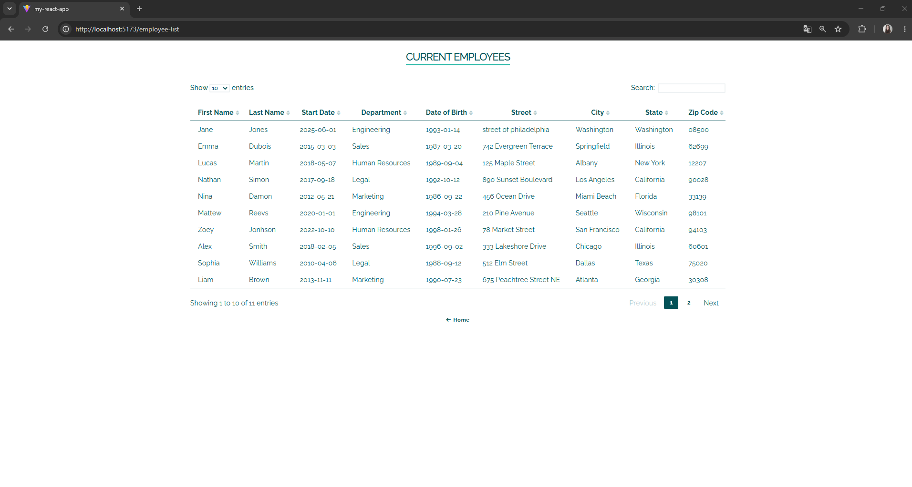
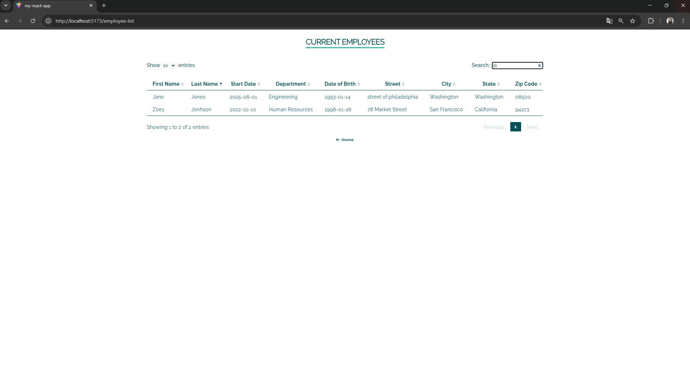

HRnet
Modernisation de l’application HRNet avec React, avec pour objectif de remplacer progressivement les fonctionnalités jQuery par des composants React et d’évaluer les performances de la nouvelle version.
Voir le projetType
Application web
Rôle
Développeuse Front-End
Outils utilisés
React • Redux • npm

objectifs
Dans le cadre de ma formation de développeur d'application JavaScript React, j’ai participé à la modernisation d’une application web en migrant une partie de son architecture de jQuery vers React.
L’objectif du projet était de faire évoluer progressivement cette application vers une architecture plus moderne en remplaçant ce plugin par un composant développé avec React. Cette migration devait répondre à plusieurs enjeux : conserver le fonctionnement de l’application existante, faciliter la maintenance du code, améliorer les performances et disposer d’un composant React réutilisable.
Processus
Les différentes étapes du projet
Conversion du plugin jQuery en composant React
J’ai commencé par sélectionner l’un des quatre plugins jQuery à convertir. J’ai choisi le plugin de fenêtre modale, utilisé pour afficher une confirmation après la création d’un nouvel employé.
J’ai donc développé une version de cette fonctionnalité sous la forme d’un composant React réutilisable, en conservant le comportement attendu de la fenêtre modale tout en l’adaptant à l’architecture React.
Une fois le composant finalisé, je l’ai publié sur npm sous forme de package, afin de pouvoir le réutiliser et de le rendre facilement accessible.
Migration de l’application HRNet vers React
J’ai ensuite entrepris la conversion de l’ensemble de l’application HRNet vers React.
J’ai recréé les principales pages de l’application, notamment « Create Employee » et « Employee List », sous forme de composants React. J’ai également mis en place un système de gestion d’état afin de gérer les données de l’application de manière plus adaptée à React, en remplacement du système de stockage local utilisé dans la version d’origine.
Refonte de l’interface
Au-delà de la migration technique, j’ai également travaillé sur l’interface afin d’assurer une cohérence visuelle entre les différentes pages.
J’ai profité de cette conversion pour revoir le design de l’application, moderniser son apparence et améliorer l’expérience utilisateur, tout en conservant les fonctionnalités principales de HRNet.
Analyse et comparaison des performances
Pour mesurer l’impact de la migration vers React, j’ai réalisé des audits de performance avec Lighthouse.
J’ai effectué un premier audit sur la version originale de l’application développée avec jQuery, puis un second sur la nouvelle version développée avec React et intégrant le composant de fenêtre modale converti.
Cette comparaison m’a permis d’obtenir des données quantifiables et d’évaluer l’évolution des performances entre les deux versions de l’application.




Retour d’expérience
Apprentissages & défis
Ce projet m’a permis de renforcer ma maîtrise de React et d’approfondir ma compréhension de la migration d’une application existante vers une architecture moderne.
L’un de mes principaux défis a été d’apprendre à créer et publier un composant React sous forme de package npm. J’ai dû comprendre les différentes étapes nécessaires à la préparation du package, sa configuration et sa publication sur le registre npm. Cette expérience m’a permis de découvrir une démarche proche de la création et de la distribution d’un véritable composant réutilisable.
J’ai également fait le choix de développer les trois composants React correspondant aux plugins jQuery restants. Le défi le plus important a été la conversion du plugin de gestion des tables de données. Cette fonctionnalité était particulièrement longue à reproduire car elle nécessitait de prendre en compte de nombreux paramètres et comportements : affichage des données, tri, pagination, recherche et différentes interactions avec le tableau.
Au-delà des aspects techniques, ce projet m’a surtout appris à être plus autonome dans ma démarche de développement : analyser l’existant, rechercher des solutions, faire des choix techniques, résoudre des problèmes et mesurer les résultats obtenus.